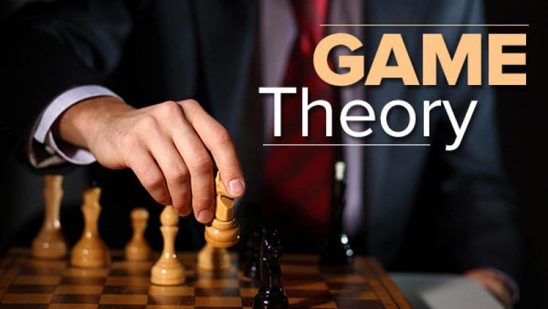

Game theory is basically a branch of mathematics that is used to typical strategic interaction between different players (agents), all of which are equally rational, in a context with predefined rules (of playing or maneuvering) and outcomes. Every player or agent is a rational entity who is selfish and tries to maximize the reward to be obtained using a particular strategy. All the players abide by certain rules in order to receive a predefined playoff- a reward after a certain outcome. Hence, a GAME can be defined as a set of players, actions, strategies, and a final playoff for which all the players are competing.
Game Theory has now become a describing factor for both Machine Learning algorithms and many daily life situations. Consider the SVM (Support Vector Machine) for instance. According to Game Theory, the SVM is a game between 2 players where one player challenges the other to find the best hyper-plane after providing the most difficult points for classification. The final playoff of this game is a solution that will be a trade-off between the strategic abilities of both players competing.
Currently, there are about 5 types of classification of games. They are as follows:
Nash equilibrium can be considered the essence of Game Theory. It is basically a state, a point of equilibrium of collaboration of multiple players in a game. Nash Equilibrium guarantees maximum profit to each player. Let us try to understand this with the help of Generative Adversarial Networks (GANs).
It is a combination of two neural networks: the Discriminator and the Generator. The Generator Neural Network is fed input images which it analyzes and then produces new sample images, which are made to represent the actual input images as close as possible. Once the images have been produced, they are sent to the Discriminator Neural Network. This neural network judges the images sent to it and classifies them as generated images and actual input images. If the image is classified as the original image, the DNN changes its parameters of judging. If the image is classified as a generated image, the image is rejected and returned to the GNN. The GNN then alters its parameters in order to improve the quality of the image produced.
This is a competitive process which goes on until both neural networks do not require to make any changes in their parameters and there can be no further improvement in both neural networks. This state of no further improvement is known as NASH EQUILIBRIUM. In other words, GAN is a 2-player competitive game where both players are continuously optimizing themselves to find a Nash Equilibrium.
In any game, one of the agents is required to disclose their strategy in front of the other agents. After the revelation, if none of the players changes their strategies, it is understood that the game has reached Nash Equilibrium. Now that we are aware of the basics of Game Theory, let us try to understand how Nash Equilibrium is attained in a simultaneous game. There are many examples but the most famous is the Prisoner’s Dilemma. There are some more examples such as the Closed-bag exchange Game, the Friend or For Game, and the iterated Snowdrift Game. In all these games, two players are involved and the final playoff is a result of a decision that has to be made by both players. Both players have to make a choice between defection and co-operation. If both players cooperate, the final playoff will turn out to be positive for both. However, if both defect, the final playoff will be negative for both players. If there is a combination of one player defecting and the other co-operating, the final playoff will be positive for one and negative for another.
Here, Nash Equilibrium plays an important role. Only if both players jot out a strategy that benefits each other and provide both with a positive playoff, the solution to this problem will be optimal. There are many more real examples and a number of pieces of code that try to solve this dilemma. The basic essence, however, is the attainment of the Nash Equilibrium in an uncomfortable situation.
Game Theory is increasingly becoming a part of the real-world in its various applications in areas like public health services, public safety, and wildlife. Currently, game theory is being used in adversary training in GANs, multi-agent systems, and imitation and reinforcement learning. In the case of perfect information and symmetric games, many Machine Learning and Deep Learning techniques are applicable. The real challenge lies in the development of techniques to handle incomplete information games, such as Poker. The complexity of the game lies in the fact that there are too many combinations of cards and the uncertainty of the cards being held by the various players.